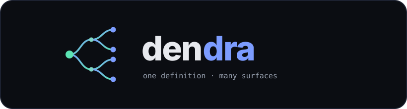
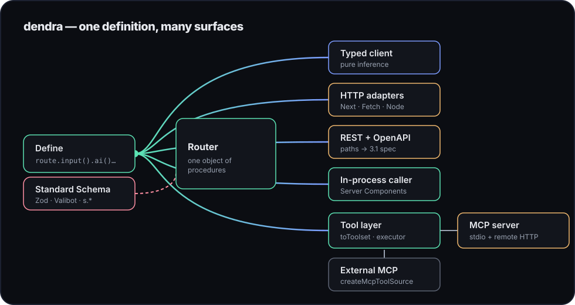
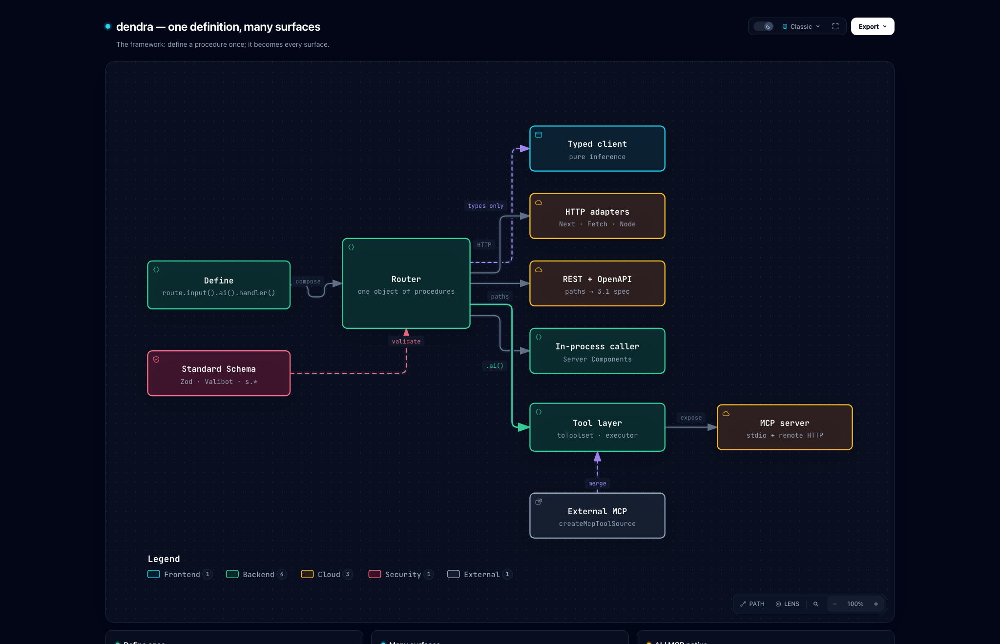
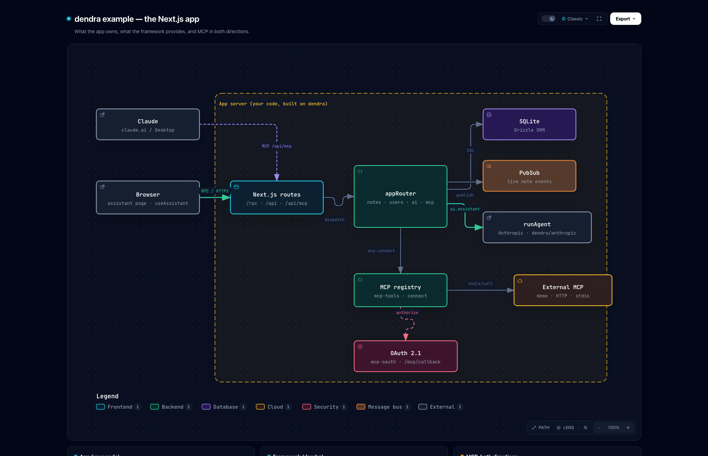

Typed APIs that are also
LLM tools & MCP servers
A typed RPC/REST framework for Next.js. Define a procedure once — get a typed client, a REST endpoint, OpenAPI, streaming, real-time, and a tool your AI agents and Claude can call over MCP.
npm create dendra-app@latest my-app

export const appRouter = {
notes: {
create: route
.post("/notes")
.input(s.object({ title: s.string(), body: s.string() }))
.ai({ description: "Create a note" }) // ← also an LLM/MCP tool
.handler(({ input, ctx }) => ctx.db.create(input)),
},
} satisfies RouterRecord;Why another API framework?
The typed-RPC space is crowded — tRPC, ts-rest, Hono, oRPC are all good at HTTP.
dendra's wedge is the part they bolt on or skip: it's AI- and MCP-native by construction.
A procedure and an LLM tool are the same shape — a name, an input schema, a validated handler —
so dendra treats them as one thing. Mark a procedure .ai() and it's instantly a tool
for Claude over MCP and for the Anthropic/OpenAI APIs, executed with the same validation that guards
your HTTP endpoints.
Architecture
dendra has two layers, and keeping them separate is the whole design. You define a procedure once and it branches into every surface — while everything specific to your product stays in your app, built on the framework.
The framework — dendra
Generic, zero-dependency plumbing anyone can reuse: the typed router and client,
HTTP / REST / OpenAPI adapters, streaming & pub/sub, and the tool / MCP layer
(toToolset, createMcpToolSource, mergeToolsets).
It never sees your data, your auth, or a token.
The app — your code
Everything specific to your product: procedures, database, the request context and auth, the UI, and MCP connection management (transports, the connection registry, OAuth). Swappable without touching the framework.
One question decides where anything belongs: would every dendra user want this, regardless of their database, auth, UI, or which servers they connect to? Yes → framework. No → app. That's why auth, navigation, voice, and MCP connection / OAuth live in the example app, while only the typed-procedure and tool-shaping primitives live in the framework.


Full breakdown in ARCHITECTURE.md.
Quickstart
Scaffold a working Next.js app in one command — or add dendra to an existing project.
npm create dendra-app@latest my-app # pick: minimal | mcp
cd my-app && npm run dev…or add it to an existing app: npm i dendra. Then define once, serve anywhere, call with full inference — no generated files.
1 Define
import { initDendra, s, type RouterRecord } from "dendra";
const { route } = initDendra<{ userId: string | null }>();
export const appRouter = {
add: route
.input(s.object({ a: s.number(), b: s.number() }))
.handler(({ input }) => input.a + input.b),
} satisfies RouterRecord;
export type AppRouter = typeof appRouter;2 Serve — Next.js App Router
// app/rpc/[...path]/route.ts
import { toNextHandler } from "dendra";
import { appRouter } from "@/server/router";
export const { GET, POST } = toNextHandler(appRouter, {
createContext: (req) => ({ userId: getSession(req) }),
});3 Call — typed, no codegen
import { createClient } from "dendra";
import type { AppRouter } from "@/server/router";
const api = createClient<AppRouter>("");
const sum = await api.add({ a: 40, b: 2 }); // number, inferredThe AI / MCP story
Your .ai() procedures become tools for LLMs and an MCP server Claude can
connect to — the same handlers, the same validation, the same auth context. dendra can also
consume external MCP servers and merge their tools into your agent loop.
import { toToolset, createToolExecutor, mcpToolDefinitions } from "dendra";
// Tool defs for Anthropic / OpenAI from your .ai() procedures:
const tools = toToolset(appRouter, { format: "anthropic" });
// Execute a tool the model chose — validated, scoped to the user's ctx:
const execute = createToolExecutor(appRouter, ctx);
await execute("notes.create", modelProvidedArgs); // bad args rejected
// MCP: the same procedures become tools Claude can call (stdio + HTTP).
const defs = mcpToolDefinitions(appRouter);Middleware & auth
Run logic before a handler — auth, logging, rate-limiting — and
enrich the context. One .use() runs across every
transport (RPC, REST, the caller, WebSocket, and AI/MCP tools). Auth stays
your app's responsibility; the framework just provides the seam.
const authed = route.use(({ ctx }) => {
if (!ctx.token) throw new DendraError("UNAUTHORIZED", "Sign in");
return { userId: lookup(ctx.token) }; // merged into ctx, typed downstream
});
const appRouter = {
me: authed.handler(({ ctx }) => ctx.userId), // ctx.userId is typed
delete: authed.input(…).ai({ … }).handler(…), // the tool is auth-guarded too
};Middlewares stack (each
sees the previous one's additions) and reject by throwing.
Because an AI/MCP tool runs the same path, a procedure behind
.use(auth) is guarded for the model too — it inherits the user's
permissions, it can't bypass them.
Class controllers (NestJS-style, no decorators)
Prefer classes for grouping and dependency injection? A
controller is a class whose fields are procedures — put an
instance in the router. You get NestJS structure and constructor DI without
decorators, reflect-metadata, or experimentalDecorators.
export class UsersController {
#db: Db; // #private: not part of the public type
constructor(db: Db) { this.#db = db; } // constructor injection
list = route.get("/users").handler(() => this.#db.users.all());
create = route
.post("/users")
.input(s.object({ name: s.string() }))
.ai({ description: "Create a user" }) // still an LLM/MCP tool
.handler(({ input }) => this.#db.users.insert(input));
}
const appRouter = { users: new UsersController(db) }; // instance = sub-router| NestJS | dendra |
|---|---|
@Controller() class | plain class with procedure fields |
@Get() / @Post() | .get() / .post() on the builder |
@Injectable() + DI container | constructor injection (new Ctrl(deps)) |
@Module() | compose the router object |
decorators / reflect-metadata | none |
How it compares
| Feature | tRPC | ts-rest | Hono | dendra |
|---|---|---|---|---|
| Typed client, no codegen | ✅ | — | ✅ | ✅ |
| REST URLs + OpenAPI | plugin | ✅ | plugin | ✅ |
| Streaming | links | — | ✅ | ✅ |
| Real-time / WebSocket | subs | — | ✅ | ✅ |
| LLM tools from procedures | — | — | — | ✅ |
| MCP server (stdio + HTTP) | — | — | — | ✅ |
| Consume external MCP servers | — | — | — | ✅ |
| Runtime dependencies | few | few | 0 | 0 |
dendra vs tRPC + MCP
tRPC is excellent — if you're building a plain typed HTTP API, use it. The difference shows up the moment you want your API callable by an LLM or Claude over MCP. With tRPC you bolt on a parallel tool layer and keep it in sync by hand; with dendra the same definition is the tool.
// 1 · define (tRPC)
const appRouter = t.router({
createNote: t.procedure
.input(z.object({ title: z.string(), body: z.string() }))
.mutation(({ input, ctx }) => ctx.db.create(input)),
});
// 2 · hand-build a separate MCP tool layer
const caller = appRouter.createCaller(ctx);
server.setRequestHandler(ListTools, async () => ({
tools: [{ name: "createNote", description: "…",
inputSchema: zodToJsonSchema(CreateNoteInput) }], // keep in sync
}));
server.setRequestHandler(CallTool, async (r) => {
if (r.params.name === "createNote") // route by hand
return wrap(await caller.createNote(r.params.arguments));
});
// repeat the schema→format work for Anthropic/OpenAI.
// consuming other MCP servers: all DIY.// one definition — that's the whole diff
export const appRouter = {
createNote: route
.input(s.object({ title: s.string(), body: s.string() }))
.ai({ description: "Create a note" }) // ← becomes a tool
.handler(({ input, ctx }) => ctx.db.create(input)),
};
const tools = toToolset(appRouter, { format: "anthropic" });
const execute = createToolExecutor(appRouter, ctx); // validated
const mcp = mcpToolDefinitions(appRouter); // tools/list
// consume an external MCP server, merge into one toolset:
const merged = mergeToolsets(
toToolSource(appRouter, ctx),
await createMcpToolSource(ghClient, { prefix: "gh." }),
);| Making your API usable by an LLM / Claude | tRPC + MCP | dendra |
|---|---|---|
| Tool JSON Schema | hand-convert from Zod | same schema, automatic |
| Which procedures are tools | maintain a separate list | .ai() on the procedure |
| Validation on tool calls | re-wire yourself | same validator as HTTP |
| Auth / ctx on tool calls | re-wire the caller | same .use() / ctx path |
| Anthropic + OpenAI formats | convert per provider | one format option |
| MCP server (stdio + HTTP) | write with the SDK | built-in bridge |
| Consume external MCP servers | DIY client + merge | createMcpToolSource + mergeToolsets |
| Drift risk (schema / description / exposure) | high — two sources of truth | none — one definition |
Choose tRPC when
You're not doing AI/MCP, you want the largest ecosystem and community, you rely on its mature React Query integration / links, or you already have a tRPC codebase.
Choose dendra when
Your API should be callable by agents and Claude with no parallel tool layer, you want one definition to stay the single source of truth, or you need to both expose and consume MCP.
Also in the box
Middleware & auth
.use() runs before handlers across every transport; rejects or enriches ctx (typed). Auth stays your app's job.
REST + OpenAPI
Give a procedure a path and .output(schema); serve REST and emit a 3.1 spec from the same schemas.
Real-time
Subscriptions are streaming procedures over a pluggable pub/sub — in-memory, or createRedisPubSub for multi-instance.
WebSocket
Multiplex unary calls + subscriptions over one socket, same router, outside serverless.
Request batching
{ batch: true } collapses same-tick unary calls into one HTTP round-trip.
Agent helpers
Optional dendra/anthropic (runAgent) and dendra/react (useAssistant) — the loop and the chat hook, if you want them.
Standard Schema
Zod, Valibot, ArkType, or the built-in validators — your choice, one interface.
In-process caller
Call procedures from Server Components with zero HTTP round-trip.